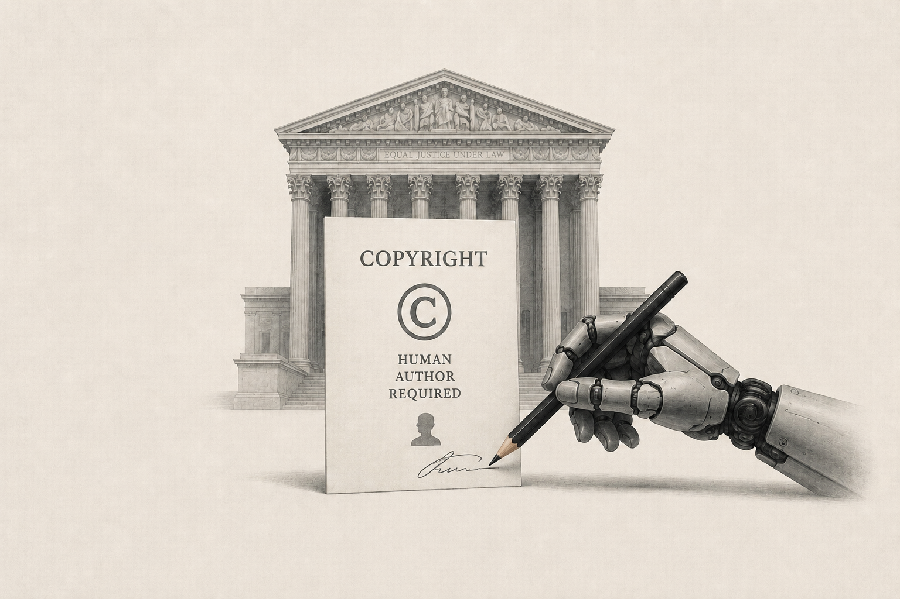

Supreme Court Refuses to Hear AI Copyright Case: Human Authorship Rule Stands

Image Source: ChatGPT
In March 2026, the U.S. Supreme Court declined to hear Thaler v. Perlmutter, leaving in place an appellate decision holding that works created entirely by AI, without human creative input, are not eligible for copyright protection under U.S. law. The case involved Dr. Stephen Thaler’s attempt to register an AI-generated artwork, A Recent Entrance to Paradise, while listing his AI system as its sole author.
The U.S. Copyright Office rejected the application, concluding that copyright protection requires human authorship. Both the U.S. District Court and the U.S. Court of Appeals for the District of Columbia affirmed that decision, holding that human authorship is a fundamental requirement of the Copyright Act. Although the Act does not expressly require an author to be human, this requirement was inferred from several statutory provisions, including references to an author’s “heirs” and the rule that copyright protection generally lasts for the life of the author plus 70 years.
Importantly, the appellate court’s decision did not address the copyrightability of works created with the assistance of AI, but only works generated entirely by AI without human creative contribution. In other words, a human who creates, directs, or meaningfully uses AI may potentially still qualify as the author of a copyrightable work (which is expected to be adjudicated on a case-by-case basis, as implied by the National Policy Framework for AI issued in March 2026 and discussed in the previous newsletter).
Source (National Constitution Center) →